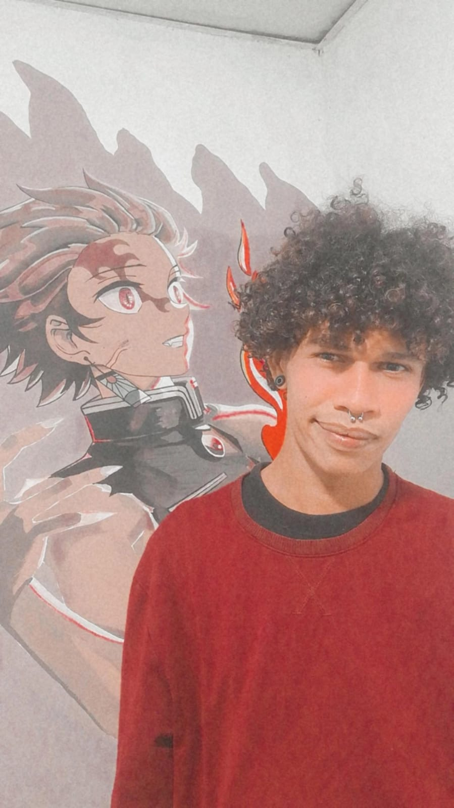

La salud mental es la salud de tu alma. Asi de importante es. El consejo que le doy a las personas que están pasando por problemas de salud mental es que se eduquen con fuentes de información científica y busquen ayuda medica profesional. No se queden con lo que diga un solo médico, es importante triangular con varios profesionales antes de tomar una decision de tratamiento. Insisto busca fuentes científicas para educarte y recibir tratamiento.
Bienvenidos a hard work, sientete como en casa.
A lo largo de mi vida pase por etapas dificiles de depresión y ansiedad y he logrado superarlas, luego de eso descubri que mi proposito es brindar apoyo y ayudar a otros a superarar las mismas situaciones por las que yo pase y ahí es donde nace Hard work.
¿Qué es hard work?
Hard work es un proyecto enfocado en el desarrollo personal, es por eso que en este blog te compartire contenido de valor y ademas de eso algunos consejos y habitos que me ayudaron a ser mejor persona, sigue leyendo, ¡y disfruta!
Dato curioso...
¿Sabias qué cada vez más hay personas en el mundo padeciendo estas enfermedades?
Necesitamos que se hable más de estos temas, y busquemos ayuda, nuestra salud mental es igual de importante como la salud fisica.
Si bien como todos sabemos solo viendo frases motivacionales quiza no sea de mucha ayuda, ya que es necesario la accion para hacer cambios en nuestras vidas.
Pero tranquilo, Hard work esta contigo, dando un paso a la vez de manera constante estaras más cerca de hacer ese cambio radical que tanto quieres.
Queremos darte la bienvenida con uno de nuestros videos especialmente hecho para ti.
Como algunas personas se preguntaran, ¿Qué debo hacer para subir de nivel? en el video de hoy te enseñaremos brevemente como hacerlo.
A continuación te daremos 5 tips.
1-No te conformes, siempre ve por mas.
2-Nunca te des por vencido.
3-Se disciplinado.
4-No te limites.
5-Se amable con todos.
¿Como ser feliz?
La felicidad es muy dificil cultivarla hoy en dia, asegurate de tener habitos que te sumen y no te resten.
Te compartire algunos habitos que suelo hacer y en lo personal me han dado muy buenos resultados en poco tiempo.
(Tener en cuenta que los resultados dependen de ti mismo)
1-Meditar mínimo dos veces al dia.
2-Hacer ejercicio 1 hora diaria.
3-Duerme bien, el adulto promedio necesita dormir alrededor de 7 a 8 horas,
algunos necesitan hasta 9 horas de sueño, pero eso ya depende de cada quien.
4-Estudia, aprende cada dia.
5-Concentrate en crecer como persona, para eso necesitas dejar a un lado todas esas personas toxicas,
recuerda hay gente que te quieren ver bien pero no mejor que ellos.
Quiero hacer enfasis en los tres primeros habitos, meditar, hacer ejercicio y dormir bien, es una de las cosas que más me ha ayudado en mi desarrollo personal. esto te ayudara a mantener el equilibrio en tu vida, no todo es trabajo o estudio.

Vive la vida al maximo sino mejor no la vivas.
El miedo es esa pequeña voz que escuchas en tu cabeza que te dice que algo saldra mal o que no eres suficiente, no escuchez esa voz y haz lo que te haga feliz.

Para finalizar este blog te dare algunos consejos que se que te podrian ayudar muchisimo.
-John Jairo Bernal García
Psicólogo profesional.

No puedo enseñarle nada a nadie, solo puedo hacerles pensar. Todos tenemos sentimientos de ansiedad, depresión y estrés de vez en cuando. Así que para ayudarte con eso, te recomiendo que práctiques respiración profunda, tai chi o yoga, come bien, escoge frutas y verduras para tener energía a largo plazo pasa tiempo con amigos o familiares, conéctate con la naturaleza. sal a dar un paseo eso puede ayudar a cualquiera a sentirse en paz.
-Pedro andres pérez domínguez.
Estudiante de psicología.
No olvides seguirnos en nuestras redes sociales para seguir viendo más contenido como este.